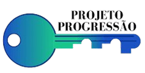

|  | A CHAVE PARA UMA EDUCAÇÃO BÁSICA DE QUALIDADE!!! |
|---|
A partir deste sábado (05/04/2025), o armário estará disponível para uso colaborativo entre voluntários e alunos! Nele, além de materiais didáticos (como as listas de exercícios de cada matéria e provas antigas do vestibulinho), temos uma biblioteca do cursinho com livros de diversos gêneros, além de alguns jogos de cartas! Para pegar algo emprestado, é só chamar algum voluntário da equipe do cursinho para registrarmos a retirada do item. Sintam-se livres para trazer coisas para o armário: livros, desenhos, adesivos, cartinhas ou qualquer memória que vocês queiram compartilhar com a gente!